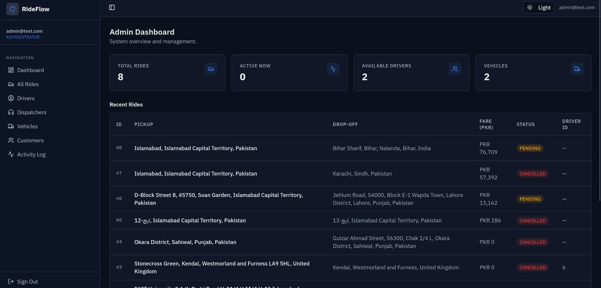

Image Gallery
Screenshots from the projects I have built. Click any image to open it full size.

StellarTrace - Search Interface
Landing view of my ArXiv research-paper search engine. Each planet is a Three.js body; selecting one filters the corpus before the C++ backend ranks the results.

StellarTrace - Ranked Results
Results returned by the C++ engine, which implements inverted indexing and Google-style ranking over ArXiv metadata.

RideFlow - Admin Dashboard
Role-based administrator view of the ride management platform: live fleet counters and a recent-rides table backed by PostgreSQL with Flyway migrations.

CubeSat Remote Sensing Simulation
An AGI STK simulation over the Baltoro, Biafo and Siachen glaciers, showing the orbital track and the sensor footprint used for coverage analysis.

Brainf*ck Interpreter & RISC-V Compiler
The interpreter running a program alongside the generated RISC-V assembly, produced by the code generator I wrote in C++.

AI Wardrobe Manager
A Java Swing desktop client that catalogues clothing items and proposes outfit combinations from stored preferences.

FutureLens Prediction System
Forecast dashboard covering stock markets, cryptocurrency, energy consumption and population growth, each projected with statistical models over historical series.